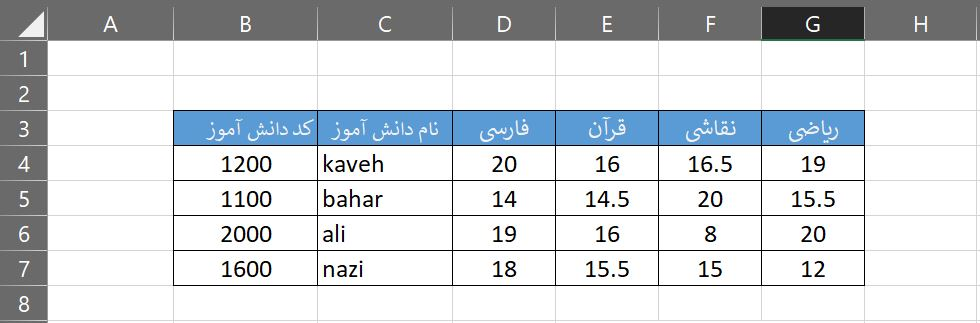
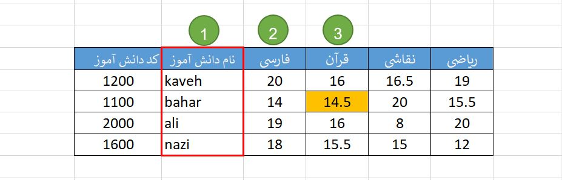
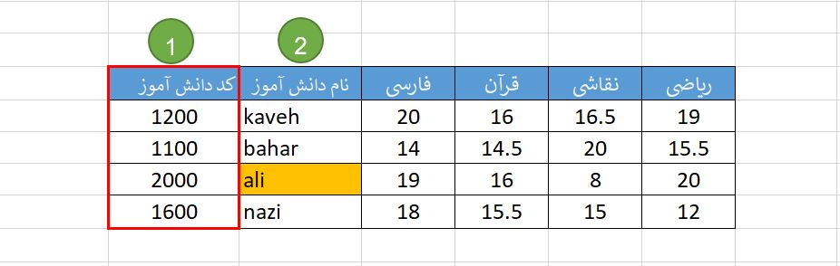

بهتر است که کار آموزش تابع VLOOKUP را از این نقطه آغاز کنیم که چرا این تابع این همه مهم است؟ و چرا باید هر کاربر اکسل آنرا در حد تسلط یاد بگیرد؟
من در کلاس های اکسل همواره این را می گویم که :
اگر کسی تابع VLOOKUP، تابع SUMIFS و PIVOT را بلد نیست، اکسل را نمیداند.
پاسخ در توجیه اهمیت VLOOKUP ساده است.
تابع VLOOKUP برای ادغام دادهها در اکسل بکار میرود.
همیشه در اکسل دادههای ما در یک شیت متمرکز نیست. دادهها در شیت ها و فایل های مختلف پراکندهاند و همواره ما به گزارش و تحلیلی نیاز داریم که لازمه آن ادغام این اطلاعات پراکنده در یک شیت میباشد.
بگذارید مثال ساده ای بزنم. شما کارشناس برنامه ریزی تولید شرکتی هستید و دو فایل اکسل به دست شما میرسد. یکی از واحد بازرگانی و دیگری از انبار.
در فایل واحد بازرگانی اسامی و تعداد کالاهایی که مشتریان سفارش داده اند ، مشخص شده و در فایلی که از انبار دریافت کردهاید تعداد موجودی هر کالا در انبار مشخص است.
حال شما باید ابتدا این دادهها را با تابع VLOOKUP ادغام کنید تا بتوانید مشخص کنید که از کالا چند عدد باید تولید شود. یعنی باید تعداد سفارش هر کالا را با تعداد موجودی انبار مقایسه کنید و سپس تصمیم بگیرید که برنامه تولید آن کالا چگونه باید باشد.
مثال مشهور دیگر محاسبه مالیات حقوق در اکسل است. یعنی در یک شیت اطلاعات حقوقی افراد را دارید و در شیت دیگر جدول مالیاتی را و میخواهید که مالیات هر کسی را بر اساس آن جدول محاسبه کنید.
فایل اکسل آموزش VLOOKUP این مقاله را از انتهای همین صفحه دانلود کنید.
درک رفتار تابع VLOOKUP
کارنامه ساده زیر را در نظر بگیرید و سپس به این سوالات پاسخ دهید؟

الف) در جلوی اسم بهار در سومین ستون جدول چه مقداری نوشته شده است؟
ب) در جلوی کد دانش آموزی 2000 در دومین ستون جدول چه مقداری نوشته شده است؟
صرفنظر از اینکه پاسخ شما به این سوالات چیست، باید بگویم که شما در اینجا دقیقا کار تابع VLOOKUP را انجام دادهاید. یعنی یک چیزی را در این جدول پیدا کرده اید و سپس گفتید که جلوی آن چیز، چه مقداری وارد شده است.
بنابراین تابع VLOOKUP یک مقداری (که به آن معلوم میگوییم) را در یک جدول پیدا می کند و می گوید که جلوی آن مقدار چه مقداری تایپ شده است. دقیقا همان کاری که شما برای پاسخ به سوالات الف و ب انجام دادید.
خیلی ساده بود. من اگر تا یک هفته برای شما هزاران VLOOKUP بنویسم، به شما اطمینان می دهم که هیچ تعریف جدیدی در رفتار این تابع نخواهید یافت.
لطفا 10 بار جمله زیر را هر 8 ساعت یکبار با صدای بلند برای خودتان تکرار کنید:
VLOOKUP یک چیزی را پیدا می کند و می گوید که جلوی آن چیست. فقط همین.
تفسیر واژه «جدول» در VLOOKUP
در سوالات الف و ب ما با ابهامی مواجه هستیم. سومین ستون جدول کجاست؟
به شما بگویم که تقریبا اشکال عمده دانشجویان در کلاس ها نکته ای است که شما هم با آن در همین ابتدا روبرو شده اید. پس خیلی نگران نباشید . در واقع حتما باید منظور از جدول و شمارگذاری ستون آن را برای شما مشخص کنم.
تعریف جدول و شماره گذاری آن در جمله زیر دقیقا مشخص است:
ستون معلوم ها، اولین ستون جدول است.
بگذارید به سوال های پرسیده شده با این تعریف ارائه شده پاسخ دهیم.
الف) در جلوی اسم بهار در سومین ستون جدول چه مقداری نوشته شده است؟
برای ما در این سوال نام دانشجو مشخص شده، بنابراین ستون معلوم های ما، ستون «نام دانش آموز» است و بنابراین اولین ستون جدول در اینجا «نام دانش آموز» خواهد بود و دومین ستون جدول در «فارسی» و سومین ستون جدول «قرآن» می باشد. پس پاسخ این سوال عدد 14.5 خواهد بود.

ب) در جلوی کد دانش آموزی 2000 در دومین ستون جدول چه مقداری نوشته شده است؟
برای ما در این سوال کد دانش آموز مشخص شده، بنابراین ستون معلوم های ما، ستون «کد دانش آموز» است و بنابراین اولین ستون جدول در اینجا «کد دانش آموز» خواهد بود و دومین ستون جدول «نام دانش آموز» و سومین ستون جدول «فارسی» می باشد. پس پاسخ این سوال عدد «علی» خواهد بود.

نکته: بسیاری از کاربران به اشتباه تصور می کنند که اولین ستون باید ستون A در اکسل باشد.
آموزش فرمول VLOOKUP
تابع VLOOKUP از شما 4 ورودی میخواهد و سپس به شما پاسخ را خواهد داد. بگذارید با حل قدم به قدم پرسش الف شروع کنیم.
در جلوی اسم بهار در سومین ستون جدول چه مقداری نوشته شده است؟
ورودی 1)
در ابتدا VLOOKUP از شما مقدار معلوم را میخواهد، پس خواهیم نوشت:
یادآوری: هر گاه در فرمولی یک متن نوشتیم باید آن متن در داخل علامت (دبل کوت) یعنی " " قرار گیرد.
ورودی 2)
سپس VLOOKUP از شما میخواهد که جدولی را برای جستجو مشخص کنید. (در واقع کاملا حق هم دارد، از کجا بدانید که در کدام شیت و یا ستونها باید جستجو را انجام دهد) . دقت داشته باشید که حتما باید این جدول دو شرط زیر را داشته باشد:
الف) اولین ستون جدول، ستونی باشد که مقادیر معلوم در آن تایپ شده است.
با توجه به تصویر چون نام دانش آموزان در ستون C وارد شده است، باید جدول ما از ستون C شروع شود.
ب) جدول شما شامل ستون مجهول ها هم باشد.
چون سومین ستون جدول (یعنی نمره قرآن) را باید پیدا میکردیم، حتما باید جدول ما حداقل تا ستون E باشد. بنابراین ادامه تابع ما میشود
یادآوری: علامت «:» در اکسل به معنای «تا» است. بنابراین C:E را باید بخوانیم ستون C تا E.
نکته: اگر جدول را بیشتر انتخاب کردیم مثلا نوشتیم C:Z، هیچ اشکالی ندارد.
ورودی 3)
خوب حالا که معلوم و جدول را مشخص کردیم، نوبت میرسد که به VLOOKUP بگوییم که مجهول ما کجاست. کافی است که جای ستون مجهول را به آن بگوییم. یعنی بگوییم در این جدول (یعنی C:E) سومین ستون حاوی مقداری است که ما آنرا لازم داریم. بنابراین باید بنویسیم:
توجه 1: حتما باید سومین ورودی یک عدد باشد. در واقع شما نمی توانید نام ستون مجهول را بدهید.
یادآوری: مجدد تاکید میشود که شمارش ستون ها باید نسبت به «جدول» باشد.
ورودی 4)
این ورودی را فعلا طوطی وارد عدد 0 بگذارید. دلیلش را فعلا نپرسید. در این مقاله به صورت مفصل توضیح دادهام.
بنابراین شکل نهایی تابع VLOOKUP شما این خواهد شد:
و در پاسخ عدد 14.5 را خواهید داشت.
حل مساله ب)
سوال) در جلوی کد دانش آموزی 2000 در دومین ستون جدول چه مقداری نوشته شده است؟ فرمولش را بنویسید؟
فرمول شما به شکل زیر خواهد بود:
حالا بگذارید من چند تا سوال بپرسم و مثلا شما پاسخ بدهید:
- چرا 2000 را داخل علامت " " قرار ندادید؟
پاسخ شما : چون یک عدد است و فقط متن ها را داخل علامت " " می گذاریم.
- چرا از ستون B، جدول را شروع کردید؟
پاسخ شما: چون معلوم ما در این مساله کد دانش آموزی است و این کدها در داخل ستون B قرار دارند و حتما باید ستون معلوم ها اولین ستون جدول ما باشد.
- چرا جدول را B:C ننوشتید؟
پاسخ شما: اشکالی ندارید که ستون های بیشتری را در جدول انتخاب کنیم.
- عدد 2 در فرمول بالا چیست؟
پاسخ شما: دومین ستون منطقه B:F است و مجهول های ما در این ستون قرار دارند.
- عدد 0 در فرمول بالا چیست؟
پاسخ شما: استاد گفته 0 بگذارید و من گوش کردم. (برای دانستن معنای 0 مقاله «محاسبه مالیات حقوق در اکسل با تابع VLOOKUP» را مشاهده نمایید)
- اگر VLOOKUP نتوانست چیزی را که مطمئن هستیم وجود دارد را بیاید، دلیلش چیست؟
پاسخ: احتمالهای زیر را بررسی کنید:
الف) احتمالا یک یا چند Space در داخل سلول معلوم وجود دارد با تابع trim این فاصله های اضافه را حذف کنید.
ب) باید بدانید که عدد 1 با متن “1” برابر نیست. ممکن است شما در تابع عدد 1 را نوشته باشید اما در جدول ، این اعداد با Format Cells TEXT ، وجود داشته باشند.
ج) حرف “ی” و “ک” را بررسی کنید.
نکات نهایی تابع VLOOKUP
نکته 1: حروف بزرگ و کوچک انگلیسی متفاوت نیستند. یعنی BAHAR = baHaR است.
نکته 2: عدد و متن متفاوتند. یعنی 2 = “2” نیست. (در یک مقاله دیگر باید اینرا دقیق توضیح دهیم اما به صورت خلاصه مربوط می شود به Format Cell Text .)
نکته 3: همواره فرض ما این است که یک مقدار معلوم وجود دارد. اگر مقادیر معلوم ها تکراری بودند، تابع vlookup اولین مقدار را مییابد.
نکته 4: تابع vlookup از wildcard ها پشتیبانی می کند یعنی میتوانید به جای “bahar” بنویسید “*aha*” و یعنی سلولی که در آن aha وجود دارد.
نکته 5: توجه داشته باشید که دو حرف “ی” و “ک” در عربی و فارسی متفاوت هستند. (بازهم در مقاله دیگری باید به موضوع چرا VLOOKUP یک مقدار را نمی یابد، بپردازیم)
نکته 6: تابع vlookup فقط می تواند رو به جلو جستجو کند. به همین دلیل است که همواره ستون معلوم ها را در ابتدای یک لیست می نویسیم. (برای یافتن مقادیر پشت سر مقدار معلوم باید از ترکیب دو تابع index و match استفاده کنیم که در یک مقاله دیگر باید به آن پرداخت).
نکته 7: اگر اطلاعات شما در شیت دیگری بود مثلا شیتی به نام DATA، فرمول اینگونه خواهد شد:
برای ارجاع به یک فایل دیگر هم، می توانید با موس محدوده دادههای آن فایل را انتخاب کنید و فرمول شما چیزی شبیه زیر می شود. (دادهها در فایل به نامه MyFile در شیتی به نام Data هستند):
نکته 8: اگر VLOOKUP مقدار یا نیابد به شما خطای N/A# میدهد. معمولا ما همواره در اکسل خطاها را مدیریت میکنیم و به جای خطا، یک چیز دیگری مثلا عدد 0 را میگذاریم. برای اینکار از فرمول IFERROR مانند نمونه زیر استفاده میکنیم:
نکته 9: همواره VLOOKUP اولین مقدار را مییابد. برای یافتن مقادیر تکراری میتوانید از تکنیکی که در کانال تلگرام فرساران به آدرس https://t.me/farsaran/36 آموزش داده شده است، استفاده کنید.
نکته 10: بدیهی است که “فرشید میدانی” با “افشین میدانی” یکی نیست، اما شبیه هم هستند. برای یافتن مقادیر مشابه میتوانید از افزونه Fuzzy Lookup که مایکروسافت آن را ارائه داده است استفاده کنید.
نویسنده: فرشید میدانی | فرساران